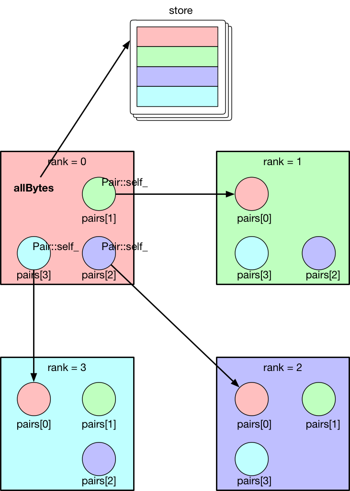
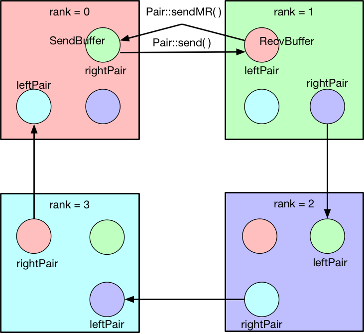

Table of contents
什么是 RDMA ？
DMA（Direct Memory Access）直接内存访问，直接访问主机内存而不需要 CPU的参与。RDMA（Remote DMA）远程直接内存访问，访问一个远程机器的内存，而不需要远端机器 CPU的参与。
RDMA 中的一些基础概念
一个典型的 RDMA 应用的流程
-
得到设备列表
得到主机上的所有可用的 IB 设备列表，每一个 IB 设备都有一个 name 和 GUID 域，唯一标识
-
打开请求的设备
查找设备列表，根据指定的 name 或者 GUID 打开所请求的 IB 设备
-
查询设备的功能
-
分配保护域 PD（Protection Domain）来保存资源
-
注册 RDMA 内存，内存注册耗时，gloo RDMA
模块是怎么做的呢？查看 Minimizing the Hidden Cost of RDMA 论文
-
创建 CQ （Completion Queue）
-
创建 QP （Queue Pair）
-
改变 QP 的状态
-
开始处理请求和传输数据，并可以开始对 poll 到请求是否完成
-
释放资源
Gloo 的底层传输 RDMA 实现
结合 gloo/transport/ibverbs 目录下的源码详细解析
address.cc / address.h
定义了为创建 QP 的连接所需要交换的数据，即调用 Pair::connect(const std::vector<char>& bytes) 来将 QP的状态从 INIT -> RTR -> RTS 进行迁移，传入的参数 bytes 就是所需要的远端 QP 的地址信息。其中， INIT -> RTR 的状态转移是需要用到远端 QP 的一些信息的。在 address.h 中有 addr_ 变量，其定义如下：
struct {
uint32_t lid;
uint32_t qpn;
uint32_t psn;
union ibv_gid ibv_gid;
} addr_;
lidLocal Identifiers – 子网内标识qpnQP Number – 标识 QP，在执行ibv_create_qp()之后即可通过返回的struct ibv_qp *对象qp_->qp_num拿到psnPacket Sequence Number – 随机值，rand() & 0xffffffgidGlobal Identifiers – 子网间标识，执行ibv_query_gid()来进行填充
Q0： 在 Gloo 的 transport 层实现中，会何时来填充这些值？
在 Pair.cc 的构造函数中填充 Address self_; 变量
Q1： 为什么 psn 是使用一个随机数来表示的？
这个在 pair.cc 的构造函数中有注释进行了说明，摘录如下：
The Packet Sequence Number field (PSN) is random which makes that the remote end of this pair needs to have the contents of the full address struct in order to connect, and vice versa.
个人感觉这个解释有些牵强；或者说在何种情况下，本端收到的远端的 Address peer_; 对象实例所包含的 addr_ 结构体是不完整的？
address.cc / address.h 中定义了两个比较重要的函数：
explicit Address(const std::vector<char>&);virtual std::vector<char> bytes() const override;
这两个函数是一个相互转换的关系，在 Gloo 的实现中，如何去拿到远端的 QP 相关的信息，是使用一个第三方的 store 来做的，例如 redis ，每一个 Pair 在创建完成（即 Pair 的构造函数执行）之后，都能够知道自身的 self_ 信息，调用 Address::bytes() 将 self_ 的 addr_ 转换为一个 char 类型的 vector。每个设备与其他设备在初始化阶段均会创建 Pair，这样每台设备将自身所有的 Pairs 的 self_ 信息（假设集群中总共连接的设备有 N 个，每台设备上创建的 Pairs 的个数就是 N-1 个）写入 store 中，之后再从 store 中取出来
device.cc / device.h
持有一些与设备相关的信息，例如：
attr_包含 IB 设备名，IB 端口号pciBusID_hasNvPeerMem_context_IB 设备的上下文信息deviceAttr_portAttr_pd_保护域comp_channel_与 CQ 相关联的 channel，从而 Arm 上一个事件通知机制 TODO 为什么一个设备仅有一个 Completion Channel？
device.h 中可以知道哪些资源是设备相关的，每台设备仅有一个 IB 上下文 context_，设备属性 deviceAttr_ 和端口信息 portAttr，保护域 pd_，以及为了给 CQ 添加通知机制的 channel_，这些资源都是每台设备（集群中的每一台机器）所独有的，而且仅有一份。
device.cc / device.h 对外提供的接口主要有:
-
std::shared_ptr<::gloo::transport::Device> CreateDevice(const struct attr&);创建一个 Device 对象，并起一个轮询线程，监听完成事件的产生 -
virtual std::unique_ptr<::gloo::transport::Pair> createPair(std::chrono::milliseconds timeout) override;新建一个 Pair 对象，其具体执行流程在对 Pair 的构造函数进行讲解时给出
另外还有几个重要的函数：
Device(const struct attr& attr, ibv_context* context);Device 的构造函数void loop();事件监听函数，用于起一个 loop 线程
IbvDevice 类负责取得 IB 设备列表，在 CreateDivece() 中打开所请求的 IB 设备（如果没有指定 IB 设备，就打开第一个 IB 设备），之后调用 Device 的构造函数，执行以下操作：
-
获得设备相关的属性
ibv_query_devie(context, device_attr) -
获取给定端口号的相关属性
ibv_query_port(context, port_num, port_attr)，需要注意的是第二个参数port_num是物理端口号，1 是第一个端口编号 -
分配保护域
pd_ = ibv_alloc_pd(context) -
创建 Completion Channel
comp_channel_ = ibv_create_comp_channel(context)为什么要创建 Completion Channel 呢？这个问题留在 Pair 的构造函数中再解释。这里我们只需要知道每一个设备仅有一个 Completion ChannelA completion channel is a mechanism for the user to receive notifications when a new completion queue event (CQE) is placed on a completion queue (CQ).
-
A completion channel is an abstraction introduced by the libibverbs library that does not exist in the InfiniBand architecture verbs specification. A completion channel is essentially a file descriptor that is used to deliver completion notifications to a userspace process. When a completion event is generated for a completion queue (CQ), the event is delivered through the completion channel attached to that CQ. This process might be useful to send completion events to different threads by using multiple completion channels.
-
The ibv destroycompchannel() function fails if any CQs are still associated with the completion event channel that is being destroyed.
-
-
新起一个线程，运行
Device::lop()，一直在轮询是否有完成事件（ WQE ）产生ibv_create_comp_channel(context)调用成功返回的结构体为struct ibv_comp_channel（其各个域如下），监听该fd上是否有POLLIN事件产生，然后进行一些处理
struct ibv_comp_channel {
struct ibv_context *context;
int fd;
int refcnt;
};
pair.cc / pair.h
在 Pair 的构造函数中，执行了如下操作
STEP0 创建完成队列（CQ，Completion Queue）
ibverbs 提供的接口为：
struct ibv_cq *ibv_create_cq(struct ibv_context *context,
int cqe,
void *cq_context,
struct ibv_comp_channel *channel,
int comp_vector);
创建一个完成队列 CQ，用于保存 CQE。每一个 QP 都有一个与之相关联的 send/recv CQ，在创建 QP 时，在 struct ibv_qp_init_attr 中填充域 send_cq 和 recv_cq ，可以指向同一个 CQ。同一个 CQ 可以被多个 QPs 共用，但这里就有一个问题了， TODO CQE 如何区分不同的 QP 呢？在 Gloo 的实现中是不是已经提供了一种方法？
-
contextIB 设备的上下文，由ibv_open_device()返回 -
cqe完成队列的最小长度，用来存放 CQE，但真实长度可能大一些 -
cq_context用户自定义的值，在 CQ 创建时可以选择指定，使用 Completion Channel 时调用ibv_get_cq_event()作为参数填充返回。在这里（Pair 的构造函数中传入的是this指针，即Pair实例对象）创建 CQ 时指定为Pair实例对象，在Device::loop()中调用ibv_get_cq_event()填充第三个参数cqContext返回，并类型转换为Pair*，对产生的完成事件进行处理。 -
channel用于指定一个已创建好的 Completion ChannelA CQ is merely a queue, that does not have a built-in notification mechanism. When using a polling paradigm for CQ processing, a completion channel is unnecessary.
作为完成队列，CQ 用于存放产生的 CQE，其本身并没有内建一个通知机制，就是何时 CQ 上放置了 CQEs，CQ 不会产生事件提醒用户程序，需要用户程序每隔一段时间调用
ibv_poll_cq()主动进行轮询，查看 CQ 上是否有 CQE 产生。If, however, you wish to use a pend paradigm, a completion channel is required. The completion channel is the mechanism that allows the user to be notified that a new CQE is on the CQ.
可以使用 Completion Channel 机制，来实现 CQ 的通知机制，在有新的 CQE放置于 CQ 上时产生一个通知。
对于 Completion Channel 机制，还需要补充一些关键点。
int ibv_req_notify_cq(struct ibv_cq *cq, int solicited_only);
给 CQ 添加上（ Arm ）通知机制（notification mechanism）。当有一个新的 CQE 产生并放置于 CQ 上时，一个完成事件（completion event）会发送给与 CQ 绑定在一起的 Completion Channel。但以下情况例外：
- If there is already a CQE in that CQ, an event won't be generated for this event.
- If the
solicited_onlyflag is set, then only CQEs for WRs that had thesolicitedflag set will trigger the notification.
函数调用中各个参数含义：
cq指定完成队列solicited-only在 Gloo 的实现中需要关闭，即置为 0，对所有的完成 CQE 均需要产生一个通知 notification
用户程序调用 ibv_get_cq_event() 去捕获这一通知。这个通知机制只会使能一次通知，当这个通知被发送之后，若需要 CQ 仍然 Arm 上通知机制，用户程序需要手动重新调用 ibv_req_notify_cq() 进行 Re-Arm 。
int ibv_get_cq_event(struct ibv_comp_channel *channel,
struct ibv_cq *cq,
void **cq_context);
阻塞调用，等待在 Completion Channel 上接收到一个通知 notification。
channel之前创建好的 Completion Channelcq作为返回值，指向与所产生的完成事件相关联的 CQcq_context在创建 CQ 时用户自定义的值，在 Gloo 的实现中，即为 Pair 实例对象，之后就可以调用ibv_poll_cq获得各 CQE 进行相对应的处理了
Once a notification for a completion queue is sent on a Completion Channel, that CQ is now dis-armed and will not send any more notifications to Completion Channel until it is re-armed again with a new call to the
ibv_req_notify_cq()operation.
这一点在上面已经有解释过了，是 RDMA Channel 通知机制的一种要求，CQ 需要每次重新 Arm 通知机制。
This operation
ibv_get_cq_event()only informs the user that a CQ has CQE to be processed, it does not actually process CQEs. The user should use theibv_poll_cq()operation to process the CQEs.
当新的 CQE 放置到 CQ 上时，产生通知给 Completion Channel，但并不会对 CQEs 进行处理，CQEs 的处理是由 ibv_poll_cq() 来做的。
Each notification sent MUST be acknowledged with the
ibv_ack_cq_events()operation. Since theibv_destroy_cq()operation waits for all events to be acknowledged, it will hang if any events are not properly acknowledged.
void ibv_ack_cq_events(struct ibv_cq *cq, unsigned int nevents);
对 ibv_get_cq_event() 获得的事件进行确认。在 Gloo 的实现中，当前 Pair 实例对象的 CQ 所需要 Ack 的事件总数保存在 Pair::completionEventsHandled_ 中，即之后传递给 nevents 。这是 ibv_ack_cq_events() 的惯用法，由于此操作在实现层面是需要得到 mutex 的，执行此函数的代价很昂贵，因此将对 CQ 所产生的多个事件的 Ack 放在一次调用中来完成。
int ibv_poll_cq(struct ibv_cq *cq,
int num_entries,
struct ibv_wc *wc);
cq完成队列num_entries能够返回的最大数目的 CQEswc存放返回的 CQEs
nwc = ibv_poll_cq(cq_, wc.size(), wc.data()) 这里的 nwc 为真实返回的 CQEs 的个数。由于 CQ 的队列长度有限，需要定期执行 ibv_poll_cq() 将 CQEs 从 CQ 中移出来。
总结一下 对于工作队列（ send/recv queue ）中的 Work Requests，当某一个 WR 完成时，会产生一个 CQE 放置于 CQ 上，有两种方式进行捕捉到放置动作：
- 每隔一段时间去调用一次
ibv_poll_cq()，因为 CQ 没有内建通知机制，虽然有 CQE 产生并放置在 CQ 上了，还是需要我们主动去轮询 CQ - 给 CQ 绑定上一个 Completion Channel，当有一个 CQE 放置于 CQ 上时，会有一个完成事件发送给此 Channel，我们可以监听这个 Channel 的
fd是否有POLLIN，当捕捉到POLLIN事件后，再使用ibv_get_cq_event()来捕获到发送给此 Channel 的通知 notification，从而知道已经有 CQEs 在 CQ 上，可以执行ibv_poll_cq()了。
STEP1 创建队列对（QP，Queue Pair）
对 struct ibv_qp_init_attr 结构体进行填充，指定 send_cq / recv_cq ，并说明 QP 的类型为 attr.qp_type = IBV_QPT_RC。
SETP2 初始化（QP state：RESET -> INIT）
QP 有四种状态：
- RESET – QP 刚被创建，即执行
ibv_create_qp() - INIT – 基本信息集合（端口号、
pkey_index、QP 的访问权限）。Ready for posting to receive queue，即之后就可以调用ibv_post_recv() - RTR – Ready to receive. Remote address info（远端 QP 的 qpn、psn、lid、gid，其中 psn 非必需）
- RTS – Ready to send. 设置超时和重试次数
STEP3 对 self_ 各字段进行填充
每个 Pair 实例对象，之后都需要将自己的 Address self_ 信息写入 store 中，例如 redis 中。self_ 的各字段就是在这里（ Pair 的构造函数）被填充的。
lid在调用ibv_query_port()之后就可以取得gid在调用ibv_query_gid()时填入值qpn在调用ibv_create_qp()创建 QP 之后就可以取得psn在 Gloo 的实现中被设置为一个随机值，用于确保Address peer_被完整接收到
STEP4 建立 QP 连接之前 post receive requests（至少 post 一个）
在 QP 处于 INIT 状态之后，用户需要 post receive buffers 到接收队列中（ ibv_post_recv() ）；至少一个 receive bufer 需要被 posted，之后才能将 QP 的状态从 INIT -> RTR（ibv_modify_qp()）。这其实也是可以理解的， RTR 状态表示 QP 已经可以接收数据了，而接收到的数据需要写入到已注册的 RDMA 内存中，不管是使用 RDMA 单边操作（one-sided）还是双边操作（two-sided），都需要提前在接收端指定好之后接收到的数据应该写入到哪一块已经注册的内存中（双边操作RDMA SEND ，对端是肯定需要有 receive buffers 来指示写入内存在哪里的；单边操作 RDMA WRITE ， TODO这个该如何理解呢？）
// Post receive requests before connecting.
// Whenever the remote side of this pair registers receive buffers,
// this triggers their memory registration to be sent to this side.
// Since these sends are one-sided, we always need a full bench of
// receive work requests. Memory region receives can be interleaved
// with regular buffer writes, so we proactively include a memory
// region in every receive work request.
for (int i = 0; i < kMaxBuffers; ++i) {
mappedRecvRegions_[i] = make_unique<MemoryRegion>(dev_->pd_);
postReceive();
}
调用 MemoryRegion 的构造函数，然后执行 postReceive()
void Pair::postReceive() {
const auto& mr = mappedRecvRegions_[recvPosted_++ % kMaxBuffers];
struct ibv_sge list = mr->sge();
struct ibv_recv_wr wr;
memset(&wr, 0, sizeof(wr));
wr.sg_list = &list;
wr.num_sge = 1;
// The work request is serialized and sent to the driver so it
// doesn't need to be valid after the ibv_post_recv call.
struct ibv_recv_wr* bad_wr = nullptr;
auto rv = ibv_post_recv(qp_, &wr, &bad_wr);
if (rv != 0) {
signalIoFailure(GLOO_ERROR_MSG("ibv_post_recv: ", rv));
}
}
ibv_post_recv() 往 QP 的接收队列中加入 WRs（在这里，每调用一次 postReceive() 就会往 QP 的接收队列中加入一个 WR），每个 WRs 指向的 Receive Buffer 是一个 struct ibv_mr 结构体，由 wr.sg_list 指向。
Receive buffers are consumed as the remote peer excutes SEND, SEND_WITHIMM and RDMA_WRITEWITHIMM. Receive buffers are NOT used for other RDMA operations.
这里我们结合 gloo/examples/example1.cc 示例进行往下的梳理。
auto dev = gloo::transport::ibverbs::CreateDevice(attr);
/* 省略了一些不重要的代码细节，具体可以直接打开 examples/example1.cc 查看 */
auto context = std::make_shared<gloo::rendezvous::Context>(rank, size);
context->connectFullMesh(prefixStore, dev);
创建一个 ibverbs 下的 Device 实例对象（具体细节已经在上面讲解到了，可以结合代码返回重新理解一遍），调用 connectFullMesh() 函数，实现在 gloo/rendezvous/context.cc 中。
void Context::connectFullMesh(rendezvous::Store &store,
std::shared_ptr<transport::Device> &dev) {
std::vector<std::unique_ptr<transport::Pair>> pairs(size);
// Create pair to connect to every other node in the collective
std::vector<char> allBytes;
for (int i = 0; i < size; i++) {
if (i == rank) {
continue;
}
auto pair = dev->createPair(getTimeout());
pairs[i] = std::move(pair);
auto addrBytes = pairs[i]->address().bytes();
allBytes.insert(allBytes.end(), addrBytes.begin(), addrBytes.end());
}
std::ostringstream storeKey;
storeKey << rank;
store.set(storeKey.str(), allBytes);
// Connect every pair
for (int i = 0; i < size; i++) {
if (i == rank) {
continue;
}
// Wait for address of other side of this pair to become available
std::ostringstream key;
key << i;
store.wait({key.str()}, getTimeout());
// Connect to other side of this pair
auto allAddrs = store.get(key.str());
auto addr = extractAddress(allAddrs, i);
pairs[i]->connect(addr);
}
device_ = dev;
pairs_ = std::move(pairs);
}
如下图所示，假设有四台 IB Device，即四个节点，每个节点会创建三个 Pair 实例对象，在 Pair 的构造函数中会对私有变量 Address self_ 进行填充（主要用于 QP 建立连接，QP 的状态 INIT -> RTR 需要用到对端信息），将这些 self_ 的值添加到 allBytes 中去，并将 allBytes 写入 store 中， key 为当前节点的 rank 号。等待所有节点将各自维护的 Pairs 的 self_ 信息 set 入 store ，之后再对应取出，这样每一个节点上的 Pair 都知道要与其建立连接的对端信息 Address peer_ 了，执行 pairs[i]->connect(addr); ，将 pair[i] 中的 qp_ 状态从 INIT -> RTR -> RTS ，之后该 QP 就可以执行 RDMA 数据传输操作了。

但需要注意的是，每一个节点仅会将其上维护的 pairs 中包含的 QP 的状态进行转变，每一个 QP 连接的对端都是由各自节点分别执行的，举例来说， rank=0 上的 pairs[1] 中包含的 qp_ 的状态从 INIT ->RTR -> RTS ，其对端为 rank=1 上的 pairs[0]，其包含的 qp_ 状态也是由 INIT -> RTR -> RTS，分别在各自节点上执行 Pair::connect() 。在 每个节点上执行完此 connectFullMesh() 函数之后，每个节点上的 Pairs 实例对象所包含的 QPs 均处于 RTS 状态。至此，所有节点之间的 RDMA 连接均建立成功，就可以进行后续的 RDMA 操作了。
pair.cc / pair.h 对外提供的接口主要有：
std::unique_ptr<::gloo::transport::Buffer> Pair::createSendBuffer(int slot, void* ptr, size_t size);创建发送缓冲区std::unique_ptr<::gloo::transport::Buffer> Pair::createRecvBuffer(int slot, void* ptr, size_t size);创建接收缓冲区
std::unique_ptr<::gloo::transport::Buffer>
Pair::createSendBuffer(int slot, void *ptr, size_t size) {
std::unique_lock<std::mutex> lock(m_);
GLOO_ENFORCE_EQ(sendCompletionHandlers_.count(slot), 0);
auto buffer = new Buffer(this, slot, ptr, size);
sendCompletionHandlers_[slot] = buffer;
return std::unique_ptr<::gloo::transport::Buffer>(buffer);
}
将对 slot 和 sendCompletionHandlers_ 的讨论搁置，我们在后面讨论 Pair 中的各个私有变量时再来说明。
新建了一个 Buffer 实例，第一个参数为调用 Pair::createSendBuffer() 这个函数的 Pair 实例对象，其后是 slot ，以及 Buffer 的起始地址 ptr 和大小 size 。在 Buffer 的构造函数中将这块内存进行 RDMA 注册，可以使用 buffer->mr_ 得到 RDMA 注册内存的元信息，即 struct ibv_mr *。
std::unique_ptr<::gloo::transport::Buffer>
Pair::createRecvBuffer(int slot, void *ptr, size_t size) {
std::unique_lock<std::mutex> lock(m_);
GLOO_ENFORCE_EQ(recvCompletionHandlers_.count(slot), 0);
auto buffer = new Buffer(this, slot, ptr, size);
recvCompletionHandlers_[slot] = buffer;
sendMemoryRegion(buffer->mr_, buffer->slot_);
return std::unique_ptr<::gloo::transport::Buffer>(buffer);
}
同样， recvCompletionHandlers_ 的讨论搁在之后。
在创建了一个 Buffer 实例之后，相比 Pair::createSendBuffer()， Pair::createRecvBuffer() 中会去调用 Pair::sendMemoryRegion() ，传入的参数为刚注册的 RDMA 内存的元信息 buffer->mr_ 和 buffer->slot_。为什么会多一个 Pair::sendMemoryRegion() 呢？在 Gloo 的实现中，对 Buffer 内容的传输使用的是 RDMA WRITE，为了进行单边操作（ one-sided），接收端需要主动告诉发送端应该将数据写入到哪一块已注册好的 RDMA 内存中，包括该块内存的 addr 和 rkey 。新创建的 RecvBuffer 就是之后用来存放数据的地方，因此需要将这块已注册的 RDMA 内存的元信息告诉给对端。
void Pair::sendMemoryRegion(struct ibv_mr *src, int slot) {
// RecvBuffer 进行 RDMA 注册之后的元信息 src，填充 MemoryRegion 中的 struct
// ibv_mr
auto mr = make_unique<MemoryRegion>(dev_->pd_, src);
struct ibv_sge list = mr->sge();
struct ibv_send_wr wr;
memset(&wr, 0, sizeof(wr));
wr.wr_id = slot;
wr.sg_list = &list;
wr.num_sge = 1;
wr.opcode = IBV_WR_SEND_WITH_IMM;
wr.send_flags = IBV_SEND_SIGNALED; // singnaled? 这个在上面有提到过
wr.imm_data = slot;
// The work request is serialized and sent to the driver so it
// doesn't need to be valid after the ibv_post_send call.
struct ibv_send_wr *bad_wr = nullptr;
int rv = ibv_post_send(qp_, &wr, &bad_wr);
if (rv != 0) {
signalIoFailure(GLOO_ERROR_MSG("ibv_post_send: ", rv));
}
// Keep memory region around until this send operation completes.
// They are posted in FIFO order, but may complete in arbitrary order.
// Therefore we store them in a map keyed on the buffer slot.
GLOO_ENFORCE_EQ(mappedSendRegions_.count(slot), 0);
mappedSendRegions_[slot] = std::move(mr);
}
RDMA 注册 struct ibv_mr 结构体，并使用 RecvBuffer RDMA 注册的元信息 src 来进行填充，然后将此元信息发送给对端 wr.opcode = IBV_WR_SEND_WITH_IMM ，其后的 RDMA WRITE 就知道是写入哪一块已注册的 RDMA 内存了。
这一发送会产生两个事件：
- 对端接收到发送的元数据信息，在对端会产生完成事件 CQE
wc->opcode = IBV_WC_RECV，这里设置的wr.imm_data = slot会在对端的wc->imm_data中接收到 - 发送端在发送完成之后会产生完成事件 CQE
wc->opcode = IBV_WC_SEND，这里设置的wr.wr_id = slot会在本端wc->wr_id中接收到
在每个节点上，有一个轮询线程 loop 在监听着 Completion Channel 上的 fd 何时 POLLIN 。当有 CQE 产生并放置于 CQ 上时，就会捕捉到这一通知，在 ibv_get_cq_event() 中就能够得到是节点上的哪一个 Pair 对象进行了相关操作，以产生了 CQE 放置于 CQ 上，使用 Pair::hadleCompletionEvent() 进行处理。
在 Pair::handleCompletionEvent() 中会 Re-Arm 上 CQ 的通知机制，将处理转给 Pair::pollCompletion() ，即执行 ibv_poll_cq() 从 CQ 上取得 CQEs，然后在 Pair::handleCompletion() 中对不同的 CQE 完成事件进行处理。
对端接受到发送的元数据信息
if (wc->opcode == IBV_WC_RECV) {
// Memory region recv completed.
//
// Only used by the remote side of the pair to pass ibv_mr's.
// They are written to in FIFO order, so we can pick up
// and use the first MemoryRegion instance in the list of
// mapped receive regions.
//
// The buffer trying to write to this slot might be waiting for
// the other side of this pair to send its memory region.
// Lock access, and notify anybody waiting afterwards.
//
// Slot is encoded in immediate data on receive work completion.
// It is set in the Pair::sendMemoryRegion function.
auto slot = wc->imm_data;
GLOO_ENFORCE_EQ(wc->status, IBV_WC_SUCCESS, "Memory region recv for slot ",
slot, ": ", ibv_wc_status_str(wc->status));
// Move ibv_mr from memory region 'inbox' to final slot.
const auto &mr = mappedRecvRegions_[recvPosted_ % kMaxBuffers];
peerMemoryRegions_[slot] = mr->mr();
// Notify any buffer waiting for the details of its remote peer.
cv_.notify_all();
// Backfill receive work requests.
postReceive();
}
在对端的接收队列中的 WRs 会指示应该将接收到的元数据信息写入到哪一块已注册的 RDMA 内存中，这个是在 Pair 的构造函数中调用 postReceive() 所指定的。
TODO 这里面有几个地方不是很懂？可能需要把图给画出来，一图胜千言？
发送端发送元数据信息成功
if (wc->opcode == IBV_WC_SEND) {
// Memory region send completed.
auto slot = wc->wr_id;
GLOO_ENFORCE_EQ(wc->status, IBV_WC_SUCCESS, "Memory region send for slot ",
slot, ": ", ibv_wc_status_str(wc->status));
GLOO_ENFORCE_GT(mappedSendRegions_.size(), 0);
GLOO_ENFORCE_EQ(mappedSendRegions_.count(slot), 1);
mappedSendRegions_.erase(slot);
}
Pair::createRecvBuffer() 创建的 Buffer 实例，其进行 RDMA 内存注册的元信息确实已经 RDMA SEND 到了对端。
另外，pair.cc / pair.h 中还有一个重要的函数 Pair::send()
void Pair::send(Buffer *buffer, size_t offset, size_t length, size_t roffset) {
struct ibv_sge list;
list.addr = (uint64_t)buffer->ptr_ + offset;
list.length = length;
list.lkey = buffer->mr_->lkey;
struct ibv_send_wr wr;
memset(&wr, 0, sizeof(wr));
wr.wr_id = buffer->slot_;
wr.sg_list = &list;
wr.num_sge = 1;
wr.opcode = IBV_WR_RDMA_WRITE_WITH_IMM;
wr.send_flags = IBV_SEND_SIGNALED;
wr.imm_data = buffer->slot_;
const struct ibv_mr *peer = getMemoryRegion(buffer->slot_);
GLOO_ENFORCE_NE(peer, (const struct ibv_mr *)nullptr);
wr.wr.rdma.remote_addr = (uint64_t)peer->addr + roffset;
wr.wr.rdma.rkey = peer->rkey;
struct ibv_send_wr *bad_wr;
auto rv = ibv_post_send(qp_, &wr, &bad_wr);
if (rv != 0) {
signalIoFailure(GLOO_ERROR_MSG("ibv_post_send: ", rv));
}
}
终于来到了真实传输 Buffer 数据的实现，使用 RDMA_WRITEWITHIMM方式，由于 RDMA WRITE 为单边操作（ one-sided），需要知道将数据写入到对端的什么位置，使用 Pair::getMemoryRegion(buffer->slot_) 就能够知道要写入对端 RDMA 内存的地址，以及对那块 RDMA 内存有哪些访问权限。
这一 RDMA_WRITEWITHIMM 操作会触发两个完成事件：
- RDMA WRITE 为单边操作，对端 CPU 不会感知到有数据写入到 RDMA 注册的内存中，但这里使用 RDMA_WRITEWITHIMM ，额外的
wr.imm_data会消费对端接收队列上的一个 WR，这样就会产生一个 CQE，就可以通知对端有 RDMA WRITE 操作发生了。在对端会产生完成事件 CQEwc->opcode = IBV_WC_RECV_RDMA_WITH_IMM，这里设置wr.imm_data = buffer->slot_会在对端wc->imm_data中接收到 - 发送端 RDMA WRITE 完成之后会产生完成事件 CQE
wc->opcode = IBV_WC_RDMA_WRITE，这里设置的wr.wr_id = buffer->slot_会在本端wc->wr_id中接收到
对端接收到发送的立即数
if (wc->opcode == IBV_WC_RECV_RDMA_WITH_IMM) {
// Incoming RDMA write completed.
// Slot is encoded in immediate data on receive work completion.
// It is set in the Pair::send function.
auto slot = wc->imm_data;
GLOO_ENFORCE_EQ(wc->status, IBV_WC_SUCCESS, "Recv for slot ", slot, ": ",
ibv_wc_status_str(wc->status));
GLOO_ENFORCE(recvCompletionHandlers_[slot] != nullptr);
recvCompletionHandlers_[slot]->handleCompletion(wc);
// Backfill receive work requests.
postReceive();
}
发送端 RDMA WRITE 成功
if (wc->opcode == IBV_WC_RDMA_WRITE) {
// Outbound RDMA write completed.
// Slot is encoded in wr_id fields on send work request. Unlike
// the receive work completions, the immediate data field on send
// work requests are not pass to the respective work completion.
auto slot = wc->wr_id;
GLOO_ENFORCE_EQ(wc->status, IBV_WC_SUCCESS, "Send for slot ", slot, ": ",
ibv_wc_status_str(wc->status));
GLOO_ENFORCE(sendCompletionHandlers_[slot] != nullptr);
sendCompletionHandlers_[slot]->handleCompletion(wc);
}
私有变量
pair.cc / pair.h 中包含很多对其私有变量的操作，这些私有变量表示什么含义，相应的操作是涉及到的是什么意思呢？接下来对这一块知识点进行说明。
std::shared_ptr<Device> dev_;
在创建 Pair 实例对象时，将节点的设备对象 Device 传进来，就可以通过 dev_ 访问到 ibv_context *context_ / ibv_pd *pd_ / ibv_comp_channel *comp_channel_ 等在同一个节点上各个 Pairs 所共享的资源了。
// Number of completion events handled by this pair's completion
// queue (also see ibv_get_cq_event(3)). This many events need to be
// acknowledged prior to destructing the completion queue.
// Otherwise, destruction will hang (see ibv_get_cq_event(3)).
int completionEventsHandled_;
这个变量的作用在上面已经说明过了。当有 CQE 产生并放置在 CQ 上时（由于 CQ 已经 Arm 上了通知机制），CQ 会产生一个完成事件通知与其绑定的 Completion Channel，这些完成事件需要被 Ack，使用 completionEventsHandled_ 来计数，记录 CQ 产生的完成事件的个数，之后传递给 ibv_ack_cq_events(cq_, completionEventsHandled_) 统一进行 Ack。
Address self_;
Address peer_;
Address 中保存了建立 QP 连接的信息 addr_ ，self_ 在 Pair 的构造函数中进行填充，然后每个设备上所有的 Pairs 都会将自己所持有的 self_ 写入到一个 store 中，当所有节点都写入之后，就可以拿到当前设备上某一特定 Pair 的对端地址了 peer_ 。之后就可以调用 Pair::connect() 建立 QP 连接了。
struct ibv_cq* cq_;
struct ibv_qp* qp_;
在 Gloo 的实现中，每一个 Pair 实例对象都有自己的 CQ 和 QP。
根据 gloo/allreduce_ring.h 对底层通信的使用，来对下面几个变量进行深入理解。
// For us to copy the remote peer's ibv_mr into.
std::map<int, struct ibv_mr> peerMemoryRegions_;
// These fields store memory regions that the remote side of the pair
// can send to and that the local side of the pair can send from.
//
// When registering a receive buffer, the local ibv_mr is sent
// to the remote side of the pair, and the corresponding MemoryRegion
// instance is kept around in the mappedSendRegions_ list until
// the send operation complete.
//
// To allow the remote side of the pair to send its memory regions,
// we keep a fixed number of MemoryRegion instances in
// mappedRecvRegions_. These regions are referenced round-robin for
// every posted receive work request.
//
std::map<int, std::unique_ptr<MemoryRegion>> mappedSendRegions_;
std::array<std::unique_ptr<MemoryRegion>, kMaxBuffers> mappedRecvRegions_;
// Keep track of number of request work requests posted and completed.
// This is needed to index into the mappedRecvRegions_ array both
// when posting the WR and when completing the WR.
uint64_t recvPosted_;
// Completions on behalf of buffers need to be forwarded to those buffers.
std::map<int, Buffer *> sendCompletionHandlers_;
std::map<int, Buffer *> recvCompletionHandlers_;
还是接上面的那个例子，有四台 IB Device，即四个节点，现在每个节点上的三个 Pair 对象均已 RDA 连接成功。在 gloo/allreduce_ring.h 的实现中，并不会使用全部的这些连接，而是选用，如下图所示。

AllreduceRing(const std::shared_ptr<Context> &context,
const std::vector<T *> &ptrs, const int count,
const ReductionFunction<T> *fn = ReductionFunction<T>::sum)
: Algorithm(context), ptrs_(ptrs), count_(count),
bytes_(count_ * sizeof(T)), fn_(fn) {
inbox_ = static_cast<T *>(malloc(bytes_));
outbox_ = static_cast<T *>(malloc(bytes_));
if (this->contextSize_ == 1) {
return;
}
auto &leftPair = this->getLeftPair();
auto &rightPair = this->getRightPair();
auto slot = this->context_->nextSlot();
// Buffer to send to (rank+1).
sendDataBuf_ = rightPair->createSendBuffer(slot, outbox_, bytes_);
// Buffer that (rank-1) writes to.
recvDataBuf_ = leftPair->createRecvBuffer(slot, inbox_, bytes_);
// Dummy buffers for localized barrier.
// Before sending to the right, we only need to know that the node
// on the right is done using the inbox that's about to be written
// into. No need for a global barrier.
auto notificationSlot = this->context_->nextSlot();
sendNotificationBuf_ =
leftPair->createSendBuffer(notificationSlot, &dummy_, sizeof(dummy_));
recvNotificationBuf_ =
rightPair->createRecvBuffer(notificationSlot, &dummy_, sizeof(dummy_));
}
这里只讨论 sendDataBuf_ 和 recvDataBuf_，sendNotificationBuf_ 和 recvNotificationBuf_ 属于代码的实现细节，暂不讨论。
对于 sendDataBuf_ 和 recvDataBuf_ ，在创建 Buffer 对象的时候传入的 slot 是相同的（在代码的实现中都为 slot = 0 ）。在 Pair::createSendBuffer() 中会对这块 sendDataBuf_ 内存进行 RDMA 注册，并在 rightPair 的 sendCompletionHandlers_ 中建立 slot 到新创建的 sendDataBuf_ 对象的映射。同样的，在 Pair::createRecvBuffer() 中会进行 RDMA 内存注册，在 leftPair 的 recvCompletionHandlers_ 中建立 slot 到新建立的 recvDataBuf_ 对象的映射；另外还会执行 Pair::sendMemoryRegion(recvDataBuf_->mr_, recvDataBuf_->slot_)，将刚注册好的接收缓存区的 RDMA 元数据信息给发送出去。
在 Pair::sendMemoryRegion() 执行 ibv_post_send() 发送 RDMA 元数据之后，会将发送端用于保存元数据的 struct ibv_mr 保存在mappedSendRegions_ 中，在之后发送端确定已发送成功之后（即 wc->opcode == IBV_WC_SEND），在从映射表中移除。在对端接受到此元数据之后（即 wc->opcode == IBV_WC_RECV ），由于接收队列中的 WRs 会按 FIFO 的顺序进行消费并写入接收到的数据，所以根据 mappedRecvRegions_[recvPosted_ % kMaxBuffers] 就可以得到元信息写入的 MR 了；使用接收到的额外的立即数作为 key，保存该 MR 在 peerMemoryRegions_ 映射表中。之后 Pair::getMemoryRegion(slot) 就可以直接取得对端的接受缓冲区的元数据信息了，就能够执行 RDMA WRITE 了。
这里就涉及到对 recvPosted_ 的递增了，在 Pair::postReceive() 中，以及对 Pair::postReceive() 进行调用的 Pair::handleCompletion() 中使用。 TODO这里是我很不理解的。
sendCompletionHandlers_ 和 recvCompletionHandlers_ 是为了之后对 Buffer 的同步操作，调用 Buffer::waitSend() 和 Buffer::waitRecv() 。 TODO 这是我现在的理解，有待完善。
TODO 另外还需要补充对 slot 的讨论。
memory_region.cc / memory_region.h
MemoryRegion 主要负责 struct ibv_mr 的注册，其包含两个私有变量
// The ibv_mr that is read from or written to.
struct ibv_mr src_;
// The ibv_mr to hold the registration of src_.
struct ibv_mr *mr_;
src_表示进行 RDMA 注册的那块内存所存放的内容或将要存放的内容是struct ibv_mr结构体类型的mr_在对src_所指向的内存单元进行 RDMA 注册（ibv_reg_mr()）时所返回的元信息
struct ibv_mr *ibv_reg_mr(struct ibv_pd *pd,
void *addr,
size_t length,
enum ibv_access_flags access);
ibv_reg_mr() 返回的是 struct ibv_mr * ，即进行 RDMA 注册的那块内存的元信息，包括内存单元的起始地址 addr、长度 length 、以及 lkey 和 rkey
struct ibv_mr {
struct ibv_context *context;
struct ibv_pd *pd;
void *addr;
size_t length;
uint32_t handle;
uint32_t lkey;
uint32_t rkey;
};
MemoryRegion 提供两个构造函数
explicit MemoryRegion(struct ibv_pd*);
explicit MemoryRegion(struct ibv_pd*, struct ibv_mr*);
若未指定第二个参数，即调用第一个构造函数，将 src_ 所指的内存单元的内容初始化为空，置 0，并进行 RDMA 注册；若指定了第二个参数，用第二个参数所指向的 struct ibv_mr 填充 src_ ，同样对 src_ 所指向的内存单元进行 RDMA 注册。
buffer.cc / buffer.h
在 Gloo 的实现中，对 Buffer 内容的传输使用的是 RDMA_WRITEWITHIMM，为了进行单边操作，接收端需要主动告诉发送端应该将数据写入到哪一块已注册好的 RDMA 内存中，包括该块内存的 addr 以及 rkey，这个是由 Pair::sendMemoryRegion() 来实现的。
TODO buffer.cc / buffer.h 中关于异步的两个函数 waitSend() 和 waitRecv() 不是很能理解
References
- Minimizing the Hidden Cost of RDMA
- RDMA Aware Networks Programming User Manual (Rev 1.7)
- C++ Concurrency in Action: Practical Multithreading
版权声明
本作品采用知识共享署名 4.0 国际许可协议进行许可，转载时请注明原文链接。